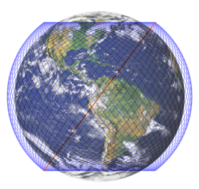

・StraLinkとは？
Wikipedia記事へ「Starlink」では高度550kmの上空に衛星が数千基が飛ぶ
一般的な通信衛星は、赤道上36000kmに打ち上げられます。この起動に衛星打ち
上げると地球の自転と同じく24時間で1周し、
地上から衛星が静止しているように見えます。そのため静止衛星といわれます。
この“静止衛星”を太平洋、大西洋、インド洋上に配置して、世界中に通信を送る
というのがこれまでの衛星通信です。
『Starlink』は、高度約550kmの低軌道上に多数の人工衛星を打ち上げて、宇宙から ブロードバンド通信サービス、主にインターネットを提供するというものです。
現在、低軌道周回に約1,500基超の“非静止衛星”が運用されています（2021年12月時点） 。従来の“静止衛星”と比べて、地表からの距離が65分の1程度と大きく近づくため、 これまでの衛星通信に比べると、大幅な低遅延と高速伝送を実現できます。
『Starlink』は、高度約550kmの低軌道上に多数の人工衛星を打ち上げて、宇宙から ブロードバンド通信サービス、主にインターネットを提供するというものです。
現在、低軌道周回に約1,500基超の“非静止衛星”が運用されています（2021年12月時点） 。従来の“静止衛星”と比べて、地表からの距離が65分の1程度と大きく近づくため、 これまでの衛星通信に比べると、大幅な低遅延と高速伝送を実現できます。
「Starlink」の通信によって、これまでは電波がつながりにくかったエリアが、よりつながりやすくなる。
引用 KDDIが活用するSpaceX社の衛星ブロードバンド「Starlink（スターリンク）」とは
・イーロン・マスク
・コンステレーション
引用 コンステレーションとは
| 地域 | 国 | 時期 | 現状 |
|---|---|---|---|
| 北アメリカ | アメリカ | 2020年11月 | ベータ版 |
| アジア | 日本 | 2022 年（予定） | 予定 |